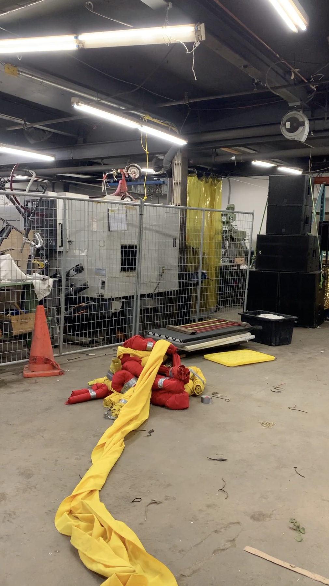
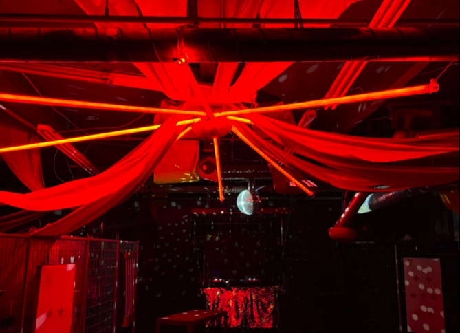
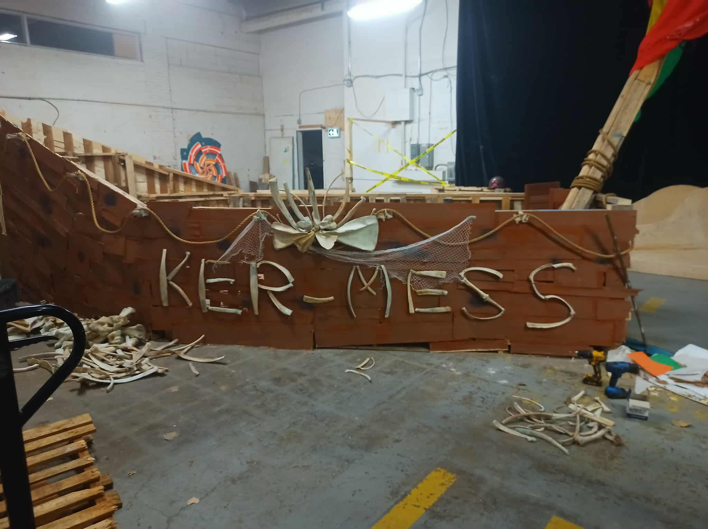
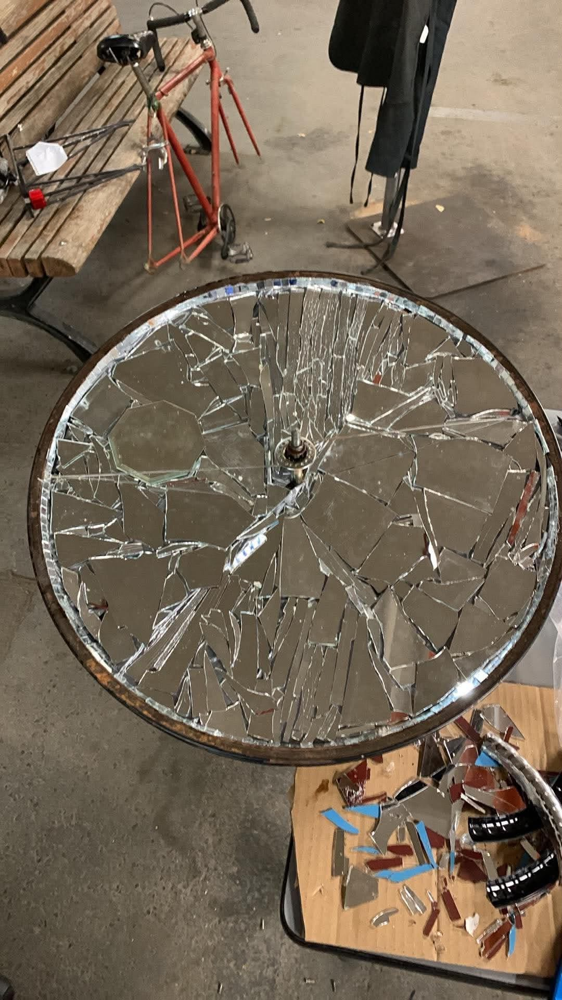
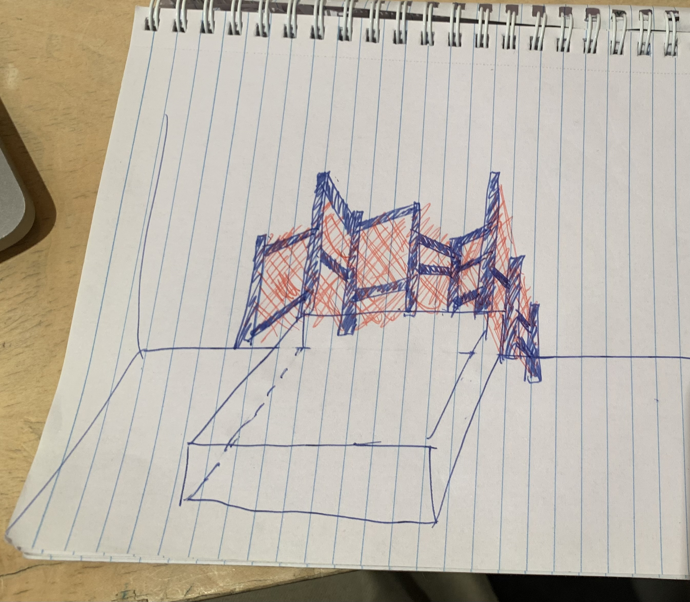

Ker-mess est un collectif artistique montréalais qui mêle arts du cirque, performances, installations et musique. Fondé par Arthur van Havre en 2023 pour participer au burn régional québécois, le groupe est aujourd'hui composé d'une quarantaine de membres artistes, musicien.nes, constructeur.rices débrouillard.es, performeur.euses. Ce qui nous relie, au-delà du désir de faire vivre la scène culturelle underground montréalaise, c'est le plaisir de faire naître ensemble des rêves et des idées à partir de rien. Le collectif a pour priorité la réutilisation et la revalorisation des matériaux. C'est un espace de liberté et de créativité extraordinaire: Arthur le dit souvent, on ne dit pas "non" à Ker-mess.
Projet
Ker-Mess

Type
Projet collectif d'arts et de musique
Période
2023–aujourd’hui
Rôle
Membre
Lieu
Québec, Canada
À propos
Réalisations marquantes
Pandémonium 2024 :
Pandémonium est la soirée de financement annuelle organisée par L'ESPACEMAKER, un espace communautaire de fabrication situé dans Hochelaga. Chaque année, 1 200 personnes viennent explorer le lieu transformé le temps d'une nuit, permettant de récolter plus de 50 000 $. Des artistes et des collectifs s'emparent de l'espace pour y construire des univers éphémères. En 2024, Ker-MESS s’est chargé de transformer l’atelier métal en cirque punk. Inspirés par le cadre, nous avons créé un cirque sombre et plus trash à partir de maérieux au départ destinés à l'eco-centre.
Pandémonium 2025 :
En 2025, pour cette édition de pandémonium, Ker-MESS s'est vu confier la plus grande salle du lieu pour y créer un univers sur la thématique feu et eau. Nous avons opté pour le thème cirque-pirates et avons construit à partir de palettes de bois une épave de bateau permettant d'accueillir 2 scènes complètes. En plus de cela, le lieu a été entièrement décoré pour correspondre à la thématique choisie.
Pandémonium 2026 :
A venir.
Photos

L'atelier métal au début de sa transformation en 2024

Le chapiteau tendu au dessus de l'atelier métal en 2024
La proue du bateau échoué en 2025

L'épave du bateau prend forme en 2025

Installation de miroirs et roue de vélo pour Pandmonium 2026
